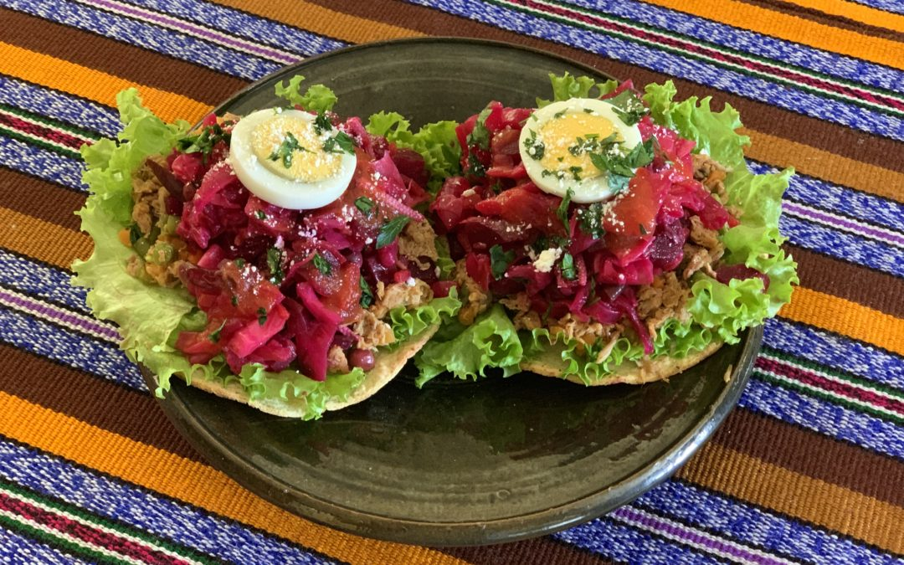
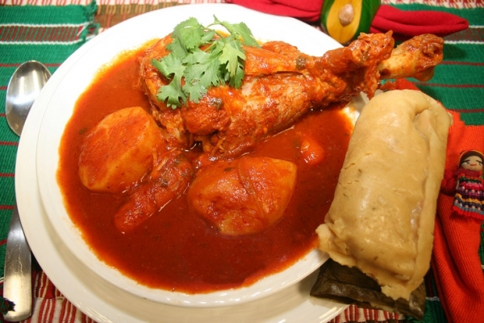
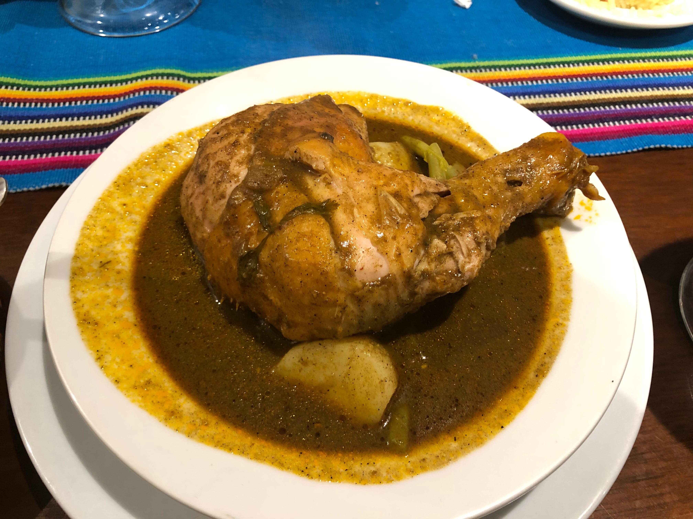

Tostadas con lechuga, carne molida, remolacha, repollo morado y huevo duro, acompañado con fresco de Jamaica

caldo con carne de “chunto”, mejor conocido como pavo; diferentes verduras, especias y mucho chile. Si se acompaña con arroz,

un guiso especiado lleno de sabor que se acompaña con pollo, carne de res o cerdo y verduras.